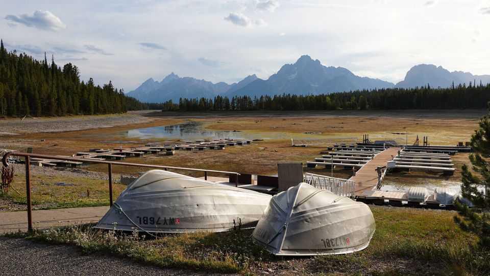

A reservoir of last resort is running dry in Wyoming
Competing water uses in the American West are getting harder to manage

Sep 10th 2026
THE TETON mountain range is a stunning sight from any angle. Reflections of the jagged peaks shimmer in the water below. Yet this summer, the biggest lake in Wyoming’s Grand Teton National Park is suffering. Jackson Lake, which also serves as a reservoir, was just 20% full on September 6th. Usually tourists queue in Colter Bay to rent boats or buy berths for lake cruises. Right now, the docks resemble mud flats. The marina shut down in mid-July—two months early.
It is rare, but not exceptional, for Colter Bay to dry up. Jackson Lake’s elevation has fallen below its current level on around 16% of days since record-keeping began in 1909. But high demand for the lake’s water and uncertainty over whether the coming winter will bring much-needed snow have river-users in Idaho and Wyoming feeling anxious. The dry lakebed is not yet a catastrophe—but it is a warning. Jackson Lake’s trials illustrate how it is becoming harder to balance competing demands for water across the American West.
It is tempting to think that abysmal snowfall in the Rocky Mountains last winter is entirely to blame for Jackson Lake’s low water level. But the headwaters of the Snake River, which feed the lake, were “almost the only part of the West that had near-normal snow-water amounts”, says Bryan Shuman of the University of Wyoming. In fact, the lake’s plight owes as much to people and policy as to weather.

In western states, those who first settle an area usually hold senior water rights—a doctrine known as “prior appropriation”. On this part of the Snake River, the most senior rights-holders include irrigation districts and canal companies that deliver water to farmers in Idaho. In the early 1900s, after the federal government dammed Jackson Lake, irrigation allowed farmers to grow alfalfa, potatoes, sugar beets and more along Idaho’s Snake River plain. An industry blossomed: agriculture in Idaho was worth nearly $45bn in 2025. “From a water-rights standpoint…they have all the cards,” says Aaron Pruzan, a river outfitter in Jackson Hole.
Poor snowpack and drought in Idaho this year forced farmers to draw more heavily on the Snake’s reservoirs. Some are routinely sucked dry. But farmers usually try to keep water in Jackson Lake because it sits higher in the mountains than the others. “Once you move water from the top, you can’t move it back up,” explains Jeff Van Orden, a potato farmer in Idaho. That Jackson Lake—their reservoir of last resort—is drying up, too, shows just how severe the situation has become.
Visitors to the lake can still trek to higher boat ramps if they want to kayak or paddleboard. Tourists are still thronging to the park. But the sad-looking reservoir reveals a tension: Idaho’s farmers need Jackson Lake emptied to irrigate their fields, while Wyoming’s recreation industry needs full rivers and lakes. The biggest misconception locals have is that water managers can alter flows out of Jackson Lake however they want, says Darren Rhea of the Wyoming Game & Fish Department. “But how you manipulate changes here influences everything else downstream.”
The lake’s recovery will depend on winter weather. The Snake’s reservoirs are usually replenished by fresh snowmelt, but the El Niño weather pattern often deprives the Northern Rockies of snow. Long-term trends look grimmer because of climate change. On average, roughly 25% less snow falls in the greater Yellowstone area each winter than it did in the 1950s. Competing demands for water may become untenable, putting the Bureau of Reclamation, the federal government’s water manager, in a difficult position. “The ‘first in time, first in right’ water-rights paradigm is definitely showing its age,” says Scott Bosse of American Rivers, an advocacy group.
Still, water users along the Snake think they’ve been relatively lucky. They look around the West and see rivers in worse shape: some Colorado River states are bracing for water cuts; for hundreds of miles the Rio Grande resembles a dry riverbed. But they worry their luck is running out. “The weather trends have kind of favoured us since the beginning of this century and been less favourable to the south-west, but that can’t be guaranteed,” says Mr Pruzan. “Just pray for snow.” ■
Stay on top of American politics with The US in brief, our daily newsletter with fast analysis of the most important political news, and Checks and Balance, a weekly note that examines the state of American democracy and the issues that matter to voters.